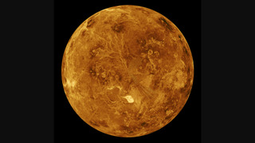
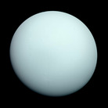
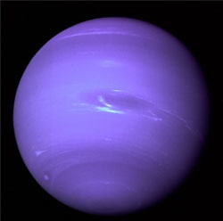

The solar system comprises the sun, eight planets, and satellites. Other than these, there are also asteroids, comets, dust, small planets, and gases found in space. The sun, Mercury, Venus, Earth, and Mars make up the inner solar system and Jupiter, Saturn, Uranus and Neptune are in the outer solar system. The asteroid belt lies in between the orbits of Mars and Jupiter.
The sun is the biggest star in the solar system, which is at the c entre of the solar system and the planets orbit around the sun. The planets rotate on their own axis and revolve around the sun in their own orbits. The rotation causes days and nights, whereas the revolution causes the change of seasons in the planets.
The research on our universe is still going on, but there are aro und 500 solar systems present in our universe, as per the little information we have gathered. Our solar system l ies in the Milkyway Galaxy, which appears like a white band in the night sky and is therefore named as Milkyway Gal axy. According to scientists and astronomers, the earth is the only planetary body where life can exist. But this can be proven wrong after other discoveries about the universe.
The largest objects that orbit the Sun are the eight planets. In order from the Sun, they are four terrestrial planets (Mercury, Venus, Earth and Mars); two gas giants (Jupiter and Saturn); and two ice giants. All terrestrial planets have solid surfaces. Inversely, all giant planets do not have a definite surface, as they are mainly composed of gases and liquids. Over 99.86% of the Solar System's mass is in the Sun and nearly 90% of the remaining mass is in Jupiter and Saturn.